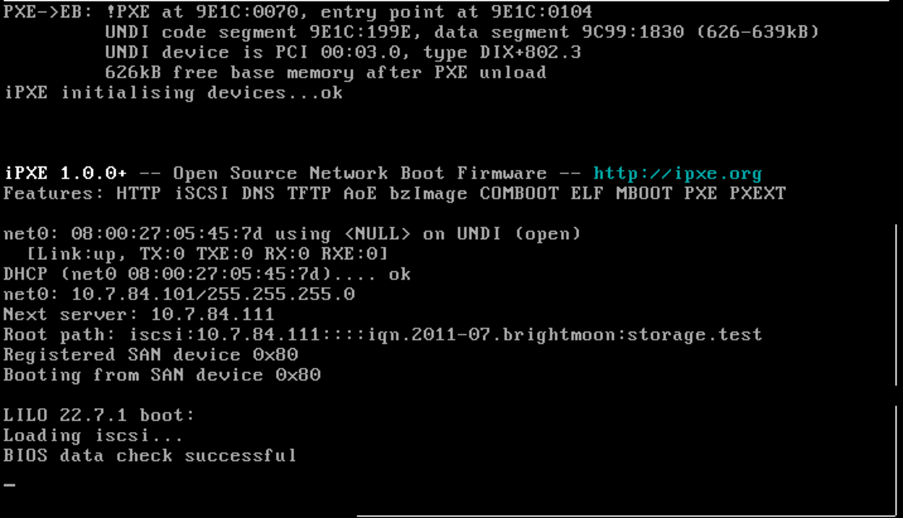
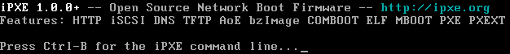

Scripting

Brought you by Francois Lacroix
iPXE is free, open-source software licensed under the GNU GPL.
The easiest way to start experimenting with iPXE is to use the bootable ISO image, boot from it. You should see the following welcome banner:

You can boot something over the network. Unlike a traditional PXE ROM, iPXE is able to boot over a wide area network such as the Internet. If the machine you are testing is connected to the Internet, you can boot the iPXE demonstration image.
!#ipxedhcp || goto retry_dhcpset base-url ${boot-url}/ubuntu-12.04-server-amd64/installkernel ${base-url}/netboot/ubuntu-installer/amd64/linuxinitrd ${base-url}/netboot/ubuntu-installer/amd64/initrd.gzboot || goto failed
See more sample on robinsmidsrod gist.